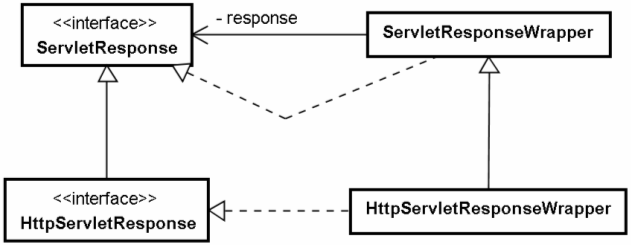

在Servlet中，是透過HttpServletResponse物件來對瀏覽器進行回應，如果你想要對回應的內容進行壓縮處理，就要想辦法讓HttpServletResponse物件具有壓縮處理的功能。先前介紹過請求包裹器的實作，而在回應包裹器的部份，你可以繼承HttpServletResponseWrapper類別（父類別ServletResponseWrapper）來對HttpServletResponse物件進行包裹。

若要對瀏覽器進行輸出回應必須透過getWriter
()取得PrintWriter，或是透過getOutputStream()取得ServletOutputStream。所以針對壓縮輸出的需求，主
要就是繼承HttpServletResponseWrapper之後，透過重新定義這兩個方法來達成。
在這邊壓縮的功能將採GZIP格式，這是瀏覽器可以接受的壓縮格式，可以使用GZIPOutputStream類別來實作。由於getWriter()的PrintWriter在建立時，也是必須使用到ServletOutputStream，所以在這邊先擴充ServletOutputStream類別，讓它具有壓縮的功能。
package cc.openhome;
import java.io.IOException;
import java.util.zip.GZIPOutputStream;
import javax.servlet.ServletOutputStream;
public class GZipServletOutputStream extends ServletOutputStream {
private GZIPOutputStream gzipOutputStream;
public GZipServletOutputStream(
ServletOutputStream servletOutputStream) throws IOException {
this.gzipOutputStream =
new GZIPOutputStream(servletOutputStream);
}
public void write(int b) throws IOException {
gzipOutputStream.write(b);
}
public GZIPOutputStream getGzipOutputStream() {
return gzipOutputStream;
}
}
GzipServletOutputStream繼承ServletOutputStream
類別，使用時必須傳入ServletOutputStream類別，由GZIPOutputStream來增加壓縮輸出串流的功能。範例中重新定義
write()方法，並透過GZIPOutputStream的write()方法來作串流輸出，GZIPOutputStream的write()方法
實作了壓縮的功能。
在HttpServletResponse
物件傳入Servlet的service()方法前，必須包裹它，使得呼叫getOutputStream()時，可以使用取得這邊所實作的
GzipServletOutputStream物件，而呼叫getWriter()時，也可以利用GzipServletOutputStream物件
來建構PrintWriter物件。
package cc.openhome;
import java.io.*;
import java.util.zip.GZIPOutputStream;
import javax.servlet.*;
import javax.servlet.http.*;
public class CompressionResponseWrapper
extends HttpServletResponseWrapper {
private GZipServletOutputStream gzServletOutputStream;
private PrintWriter printWriter;
public CompressionResponseWrapper(HttpServletResponse resp) {
super(resp);
}
@Override
public ServletOutputStream getOutputStream() throws IOException {
if(printWriter != null) {
throw new IllegalStateException();
}
if (gzServletOutputStream == null) {
gzServletOutputStream = new GZipServletOutputStream(
getResponse().getOutputStream());
}
return gzServletOutputStream;
}
@Override
public PrintWriter getWriter() throws IOException {
if(gzServletOutputStream != null) {
throw new IllegalStateException();
}
if (printWriter == null) {
gzServletOutputStream = new GZipServletOutputStream(
getResponse().getOutputStream());
OutputStreamWriter osw = new OutputStreamWriter(
gzServletOutputStream,
getResponse().getCharacterEncoding());
printWriter = new PrintWriter(osw);
}
return printWriter;
}
@Override
public void setContentLength(int len) {}
public GZIPOutputStream getGZIPOutputStream() {
if (this.gzServletOutputStream == null) {
return null;
}
return this.gzServletOutputStream.getGzipOutputStream();
}
}
在上例中要注意，由於Servlet規格書中規定，在同一個請求期間，getWriter
()與getOutputStream()只能擇一呼叫，否則必須丟出IllegalStateException，因此建議在實作回應包裹器時，也遵循
這個規範，因此在重新定義getOutputStream()與getWriter()方法時，分別要檢查是否已存在PrintWriter與ServletOutputStream實例。
注意！在這個過濾器真正完成壓縮處理之前，Servlet/JSP必須全部出清緩衝的回應資料。
在getOutputStream()中建立GZipServletOutputStream實例並傳回。在getWriter()中呼叫
getOutputStream()取得GZipServletOutputStream物件，作為建構PrintWriter實例時使用，如此所建立的
PrintWriter物件也就具有壓縮功能。由於真正的輸出會被壓縮，忽略原來的內容長度設定。
接下來可以實作一個壓縮過濾器，使用上面所開發的CompressionResponseWrapper來包裹原HttpServletResponse。
package cc.openhome;
import java.io.*;
import java.util.zip.GZIPOutputStream;
import javax.servlet.*;
import javax.servlet.http.*;
import javax.servlet.annotation.WebFilter;
@WebFilter(filterName="CompressionFilter", urlPatterns={"/*"})
public class CompressionFilter implements Filter {
public void init(FilterConfig filterConfig) {}
public void doFilter(ServletRequest request,
ServletResponse response,
FilterChain chain)
throws IOException, ServletException {
HttpServletRequest req = (HttpServletRequest) request;
HttpServletResponse res = (HttpServletResponse) response;
String encodings = req.getHeader("accept-encoding");
if ((encodings != null) && (encodings.indexOf("gzip") > -1)) {
CompressionResponseWrapper responseWrapper =
new CompressionResponseWrapper(res);
responseWrapper.setHeader("content-encoding", "gzip");
chain.doFilter(request, responseWrapper);
GZIPOutputStream gzipOutputStream =
responseWrapper.getGZIPOutputStream();
if (gzipOutputStream != null) {
gzipOutputStream.finish();
}
}
else {
chain.doFilter(request, response);
}
}
public void destroy() {}
}
瀏覽器是否接受GZIP壓縮格式，可以透過檢查accept-encoding請求標頭中是否包括"gzip"字串來判斷。如果可以接受GZIP壓縮，建立CompressionResponseWrapper包裹原回應物件，並設定content-encoding回應標頭為"gzip"，如此瀏覽器就會知道回應內容是GZIP壓縮格式。接著呼叫FilterChain
的doFilter()時，傳入的回應物件為CompressionResponseWrapper物件。當FilterChain的doFilter
()結束時，必須呼叫GZIPOutputStream的finish()方法，這才會將GZIP後的資料從緩衝區中全部移出並進行回應。注意！在這個過濾器真正完成壓縮處理之前，Servlet/JSP必須全部出清緩衝的回應資料，否則壓縮的資料將是不完整的。
如果客戶端不接受GZIP壓縮格式，則直接呼叫FilterChain的doFilter()，這樣就可以讓不接受GZIP壓縮格式的客戶端也可以收到原有的回應內容。
|